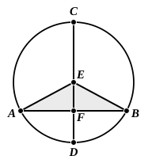
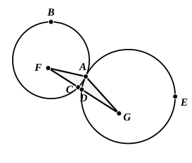
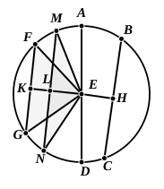
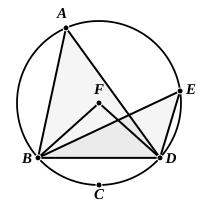
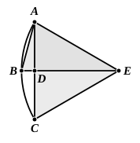
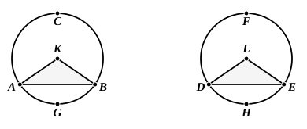
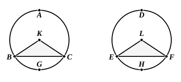
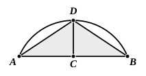
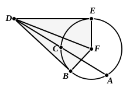

BOOK III. PROPOSITIONS.¶

If in a circle a straight line through the centre bisect a straight line not through the centre, it also cuts it at right angles; and if it cut it at right angles, it also bisects it.
If on the diameter of a circle a point be taken which is not the centre of the circle, and from the point straight lines fall upon the circle, that will be greatest on which the centre is, the remainder of the same diameter will be least, and of the rest the nearer to the straight line through the centre is always greater than the more remote, and only two equal straight lines will fall from the point on the circle, one on each side of the least straight line.

If two circles touch one another externally, the straight line joining their centres will pass through the point of contact.

Of straight lines in a circle the diameter is greatest, and of the rest the nearer to the centre is always greater than the more remote.
The straight line drawn at right angles to the diameter of a circle from its extremity will fall outside the circle, and into the space between the straight line and the circumference another straight line cannot be interposed; further the angle of the semicircle is greater, and the remaining angle less, than any acute rectilineal angle.

In a circle the angles in the same segment are equal to one another.

Given a segment of a circle, to describe the complete circle of which it is a segment.

In equal circles equal straight lines cut off equal circumferences, the greater equal to the greater and the less to the less.

In equal circles equal circumferences are subtended by equal straight lines.

To bisect a given circumference.

If a point be taken outside a circle and from the point there fall on the circle two straight lines, if one of them cut the circle, and the other fall on it, and if further the rectangle contained by the whole of the straight line which cuts